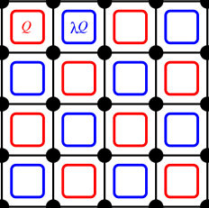
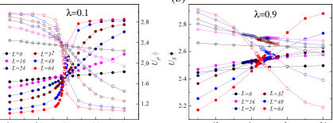
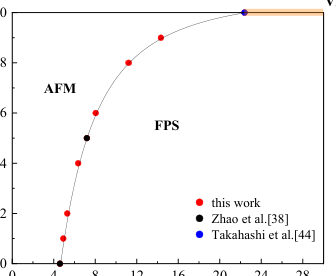

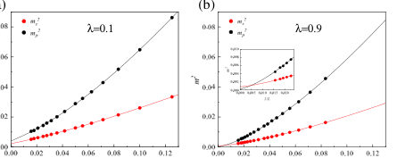
← Index · ← Previous · Next →
Authors: Nisarg Chadha, Michael G. Scheer, Eslam Khalaf
Type: theory · Category: strongly correlated electrons · PDF: https://arxiv.org/pdf/2606.06584v1
Analysis basis: full PDF text, analyzed in chunks
Topic relevance: analog quantum simulation 2/5 · entanglement & information structure 1/5 · exotic spin models in light-matter 1/5
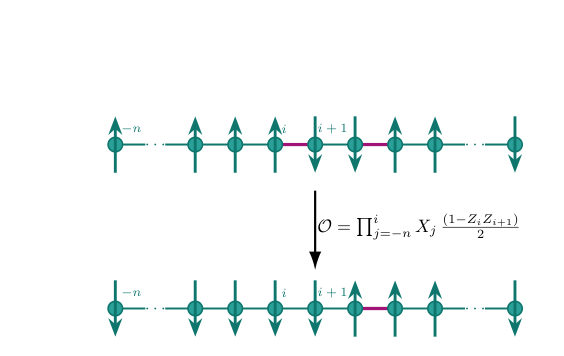
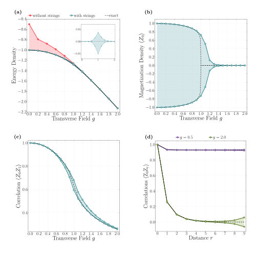
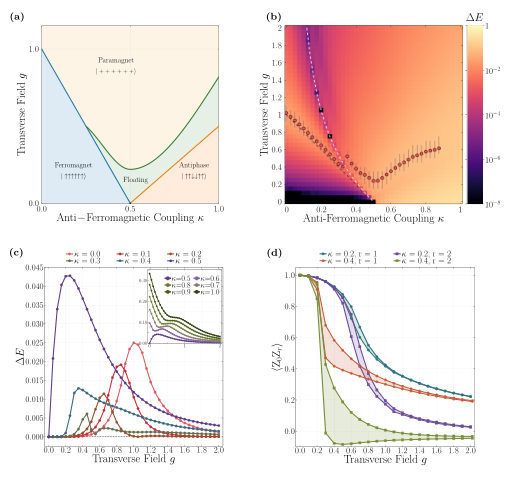
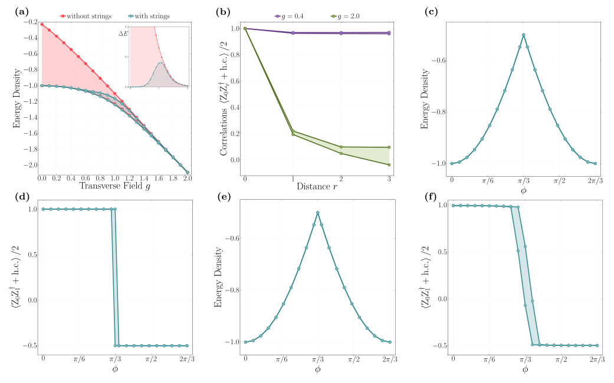
Summary. This paper advances the many-body bootstrap method by introducing non-local 'string' operators to improve bounds on ground-state observables in quantum spin systems. By applying this technique to models like the TFIM and ANNNI, the authors demonstrate that these extended constraints can accurately map out phase boundaries and resolve issues related to domain-wall excitations in symmetry-broken phases.
Why it may be interesting. The development of methods that rigorously constrain ground state properties using extended, non-local operators is highly valuable for understanding quantum phase transitions in strongly correlated magnetic materials where simple local descriptions fail.
Main problem. The primary goal is obtaining rigorous, tight bounds on ground-state observables for quantum spin systems in the thermodynamic limit.
Main result. By incorporating non-local, string-like operators into the bootstrap method, the authors significantly tighten existing bounds, especially in spontaneously symmetry-breaking (SSB) phases.
Method. They employ the many-body bootstrap technique, formulating it as a Semidefinite Program (SDP), and crucially extend the operator set with non-local 'string' operators to handle domain-wall excitations.
Model / system. The work applies to 1D quantum spin systems, including the transverse-field Ising model (TFIM), the axial next-nearest-neighbor Ising model (ANNNI), and the Z3 chiral clock model. The Hamiltonians describe various magnetic ordering phases.
Key observables. Ground-state observables, energy density ($\Delta E$), magnetization density, and correlation functions ($\langle Z_0 Z_r angle$).
Important parameters / regimes. The transverse field strength ($g$), the next-nearest-neighbor coupling ($\kappa$), and the symmetry parameter ($\phi$) are key tuning parameters used to map out phase diagrams.
Assumptions / limitations. The method assumes that incorporating string operators allows for a formulation directly in the thermodynamic limit, overcoming limitations of local operator sets in SSB phases.
Figures summary. Figures illustrate the tightening of bootstrap bounds (e.g., energy density vs. parameters) when comparing results from local versus string-operator constrained SDPs across different models like TFIM and ANNNI.
Paper structure. The paper first establishes the limitations of local operators in SSB phases, then introduces non-local string operators to formulate the bootstrap in the thermodynamic limit. It applies this construction sequentially to 1D TFIM, then ANNNI, and finally generalizes it to the Z3 chiral clock model.
Bootstrap is a numerical many-body method that provides rigorous bounds on ground-state observables by imposing a set of necessary constraints on the expectation values of operators. The quality of the resulting bounds is sensitive to the choice of operators entering the constraints. In particular, bounds on ground-state correlations are often loose in spontaneous symmetry-breaking (SSB) phases, since local operator sets cannot exclude domain-wall excitations. In this work, we introduce non-local, string-like operators into the bootstrap and show that the program can be formulated directly in thermodynamic limit. We then apply our construction to several 1D spin models. First, we obtain a significant tightening of the bounds in the SSB phase of the 1D transverse-field Ising model. Using the 1D axial next-nearest-neighbor Ising model, we further show that this tightening allows for a quantitative estimate of the locations of phase boundaries. Finally, we generalize the string operators to the 1D $\mathbb{Z}_3$ chiral clock model and track the behavior of the bounds across the phase diagram. Our results broaden the class of constraints available to the bootstrap and open a route toward bootstrapping more general symmetry-broken and topological phases, where the relevant constraints may involve non-local or extended operators.
Authors: Byungmin Kang, Hyunwoong Kwon, Vito W. Scarola, Kwon Park
Type: theory · Category: strongly correlated electrons · PDF: https://arxiv.org/pdf/2606.06919v1
Analysis basis: full PDF text, analyzed in chunks
Topic relevance: quantum measurements 2/5 · analog quantum simulation 1/5 · measurement-induced transitions 1/5
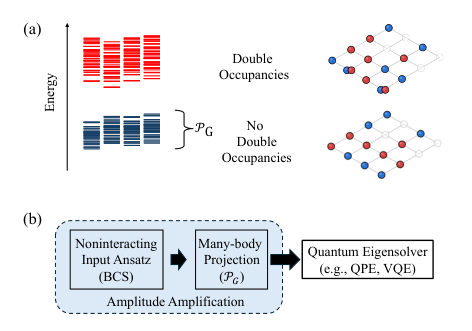
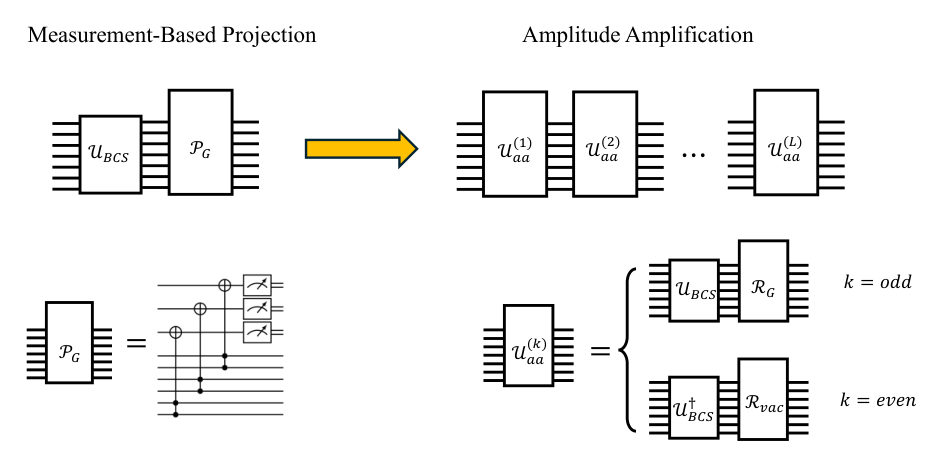
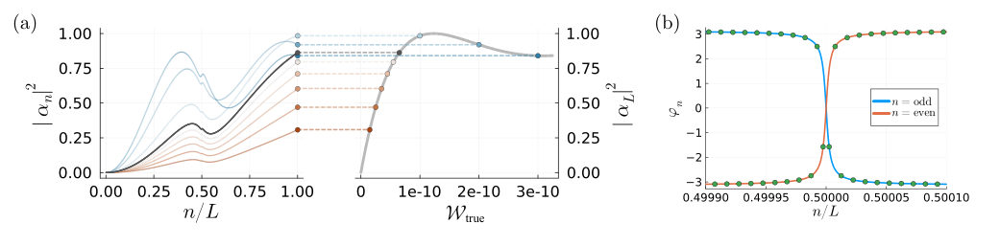
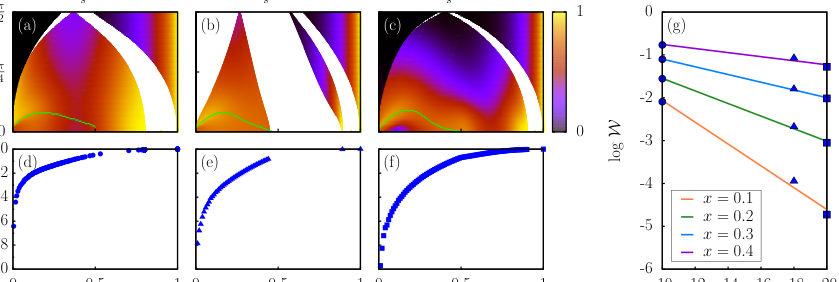
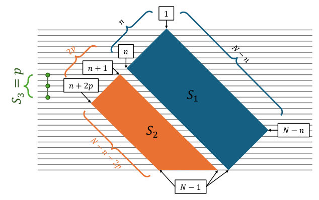
Summary. The paper presents scalable quantum algorithms to prepare the Gutzwiller-projected BCS state, which serves as an essential input for simulating strongly correlated electron models like the $t$-$J$ model. By employing Amplitude Amplification (AAGP), the required computational resources scale quadratically better than previous measurement-based techniques. This breakthrough moves projected state preparation from a theoretical hurdle to a potentially deployable protocol for quantum simulation.
Why it may be interesting. This work is highly relevant as it develops a concrete quantum computational primitive—scalable state preparation—essential for simulating complex many-body phenomena in condensed matter physics that are intractable classically.
Main problem. The core challenge is preparing physically accurate input states for quantum simulation of strongly correlated lattice models, specifically due to the non-trivial Gutzwiller projection.
Main result. The proposed Amplitude Amplification for Gutzwiller Projection (AAGP) algorithm achieves a quadratic speedup in required projection queries compared to measurement-based methods. This makes state preparation practically feasible at relevant finite system sizes.
Method. The authors develop and analyze the AAGP quantum circuit, which uses amplitude amplification techniques derived from Grover's search structure to estimate the overlap between the desired Resonating Valence Bond (RVB) state and the initial BCS ansatz. The full BCS state itself is constructed using Givens rotations applied after diagonalizing a Bogoliubov-de Gennes Hamiltonian.
Model / system. The work focuses on strongly correlated lattice models, particularly the $t$-$J$ model derived from the Hubbard model, relevant to high-temperature superconductivity. The target state is the Gutzwiller-projected BCS state $|\psi_{ ext{RVB}} angle = \mathcal{P}_G |\psi_{ ext{BCS}} angle$.
Key observables. The probability weight $W = |\langle\psi_{RVB}|\psi_{BCS} angle|^2$ is the key observable, and the required number of projection queries ($O(1/\sqrt{W})$ vs. $O(1/W)$) quantifies the algorithmic improvement.
Important parameters / regimes. System size (e.g., 100 sites), pairing gap ($\Delta$), hole doping concentration ($x$), and the desired success tolerance ($\delta$).
Assumptions / limitations. The analysis assumes that while the weight $W$ decreases exponentially with system size, the quadratic speedup of AAGP is large enough to provide a decisive practical advantage at finite sizes. The BCS state construction relies on mapping fermionic operators via Bloch-Messiah decomposition.
Figures summary. Figures illustrate the workflow for Gutzwiller projection using amplitude amplification (AAGP), show the structure of the quantum circuit involving Givens rotations, and demonstrate the convergence of success probability versus iteration number.
Paper structure. The paper systematically builds the necessary components: first, defining the physical problem and the BCS state construction; second, detailing the inefficient measurement-based projection method; third, introducing and analyzing the AAGP algorithm using amplitude amplification theory (including recursion relations solved via Chebyshev polynomials); and finally, calculating the overlap weight $W$ for specific models like the $t$-$J$ model.
Quantum simulation requires highly accurate input states. Gutzwiller-projected Bardeen-Cooper-Schrieffer (BCS) states provide physically motivated input states for solving strongly correlated lattice models, but their preparation on a quantum computer is hindered by the non-trivial nature of the Gutzwiller projection. We construct scalable quantum algorithms for this task by combining a circuit construction for arbitrary BCS states with the amplitude amplification for Gutzwiller projection (AAGP) procedure. AAGP yields a quadratic reduction in the number of projection queries compared with measurement-based postselection and leads to substantially improved fault-tolerant resource scaling. For projected BCS states optimized for the square-lattice $t$-$J$ model, we find that the projected-state weight decreases exponentially with system size, but the quadratic improvement is still large enough at physically relevant finite sizes to make a decisive practical difference. In particular, for a 100-site benchmark, AAGP reduces the required number of projection queries by about seven orders of magnitude. These results establish AAGP as an enabling input-state preparation protocol for projected BCS states in quantum simulation.
Authors: Jiayou Yin, Lu Liu
Type: theory · Category: strongly correlated electrons · PDF: https://arxiv.org/pdf/2606.07178v1
Analysis basis: full PDF text, analyzed in chunks
Topic relevance: analog quantum simulation 2/5 · exotic spin models in light-matter 1/5




Summary. This work uses Quantum Monte Carlo simulations on the extended chequerboard J-Q model to map its phase diagram. The authors demonstrate that the transition from the Antiferromagnetic (AFM) state to the Plaquette-Singlet (PS) solid is universally first-order for $\lambda < 1$. Crucially, they establish that this transition is governed by an emergent O(4) symmetry.
Why it may be interesting. The detailed study of emergent symmetries (O(4) vs O(5)) in a lattice model provides deep insight into how underlying microscopic interactions dictate macroscopic quantum behavior, which is fundamental to understanding strongly correlated materials.
Main problem. The study investigates the ground state properties and phase diagram of an extended chequerboard J-Q model to understand the nature of the direct transition from the Antiferromagnetic (AFM) state to the Plaquette-Singlet (PS) solid state, relevant to materials like SrCu2(BO3)2.
Main result. The research concludes that for parameters $\lambda < 1$, the system undergoes a direct first-order phase transition between AFM and PS phases, exhibiting an emergent O(4) symmetry. No intermediate phase was found across the investigated parameter space.
Method. Large-scale Stochastic Series Expansion (SSE) Quantum Monte Carlo (QMC) simulations were employed to map the ground state phase diagram.
Model / system. The model is an extended chequerboard J-Q Hamiltonian, incorporating nearest-neighbor Heisenberg interactions ($J$) and four-spin couplings ($Q, \lambda Q$) on different plaquettes. It interpolates between known limits like the original CBJQ model ($\lambda=0$) and the $J-Q2$ model ($\lambda=1$).
Key observables. Binder ratios ($U_s, U_p, U_{VBS}$), order parameters ($ ext{m}_p, ext{m}_s$), and probability distributions $P(D_x, D_y)$ are used to diagnose phase transitions and symmetries.
Important parameters / regimes. The coupling constants $Q$ and $\lambda$, which define the parameter space $(Q, \lambda)$, are crucial. Specific limits include $\lambda=0$ (O(4) symmetry) and $\lambda=1$ (O(5) symmetry).
Assumptions / limitations. The analysis assumes that Binder ratio crossing points provide a reliable method for locating phase transitions via finite-size scaling, although computational limitations sometimes restrict the focus to certain ratios.
Figures summary. Figures illustrate the dependence of binder ratios ($U_{VBS}$) on $\lambda$ across various values. Other figures show order parameter distributions $P(D_x, D_y)$ confirming O(4) symmetry for $\lambda < 1$.
Paper structure. The paper systematically analyzes the model by first establishing the Hamiltonian and relevant physical context (AFM to PS transition). It then applies QMC simulations across varying coupling parameters ($\lambda$) using diagnostic tools like Binder ratios. The core of the work is mapping the phase diagram, confirming the nature (first-order) and symmetry (O(4)) of the primary transition.
The chequerboard $J-Q$ model was proposed to describe the direct phase transition from the antiferromagnetic (AFM) state to the plaquette-sin glet (PS) solid state observed in SrCu$_2({\rm BO}_3)_2$. In this paper, we present a Monte Carlo study of the ground state of an extended ve rsion of this model. For all parameters investigated, we find only a direct first-order phase transitions from the AFM to the PS phase, with no intermediate phase between them. On the transition line, the system exhibits an emergent $O(4)$ symmetry. Furthermore, we find that the Bi nder ratio of the columnar valence-bond solid state can be used to locate the phase transition. It exhibits a monotonic finite-size scaling b ehavior, allowing for a precise determination of the transition point.
Authors: Janett Prehl, Ligia Loretta Cirstea, Daniel Dick
Type: theory · Category: disordered systems and neural networks · PDF: https://arxiv.org/pdf/2606.07241v1
Analysis basis: full PDF text, analyzed in chunks
Topic relevance: analog quantum simulation 1/5 · driven-dissipative phase transition 1/5 · methods for driven-dissipative 1/5 · non-equilibrium dynamics 1/5 · non-equilibrium universality 1/5
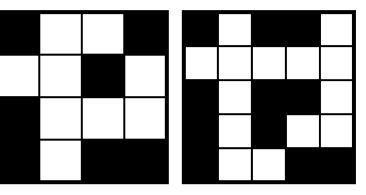
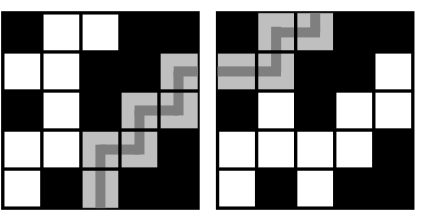
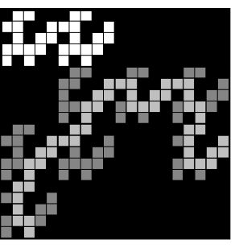
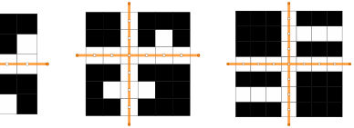
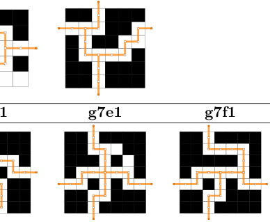
Summary. This work introduces randomised mixed labyrinth fractals to study their topological properties by randomly mixing generating patterns. The authors analyze how this randomness affects key metrics like arc dimension and shortest path scaling using advanced matrix methods. It provides a flexible theoretical framework for studying fractal dynamics relevant to physical systems like diffusion.
Why it may be interesting. While focused on geometry, the study of complex fractal dimensions and transport properties in disordered media (like random networks) shares mathematical techniques with understanding quantum localization or energy transport in disordered potentials.
Main problem. The paper introduces and analyzes 'randomised mixed labyrinth fractals,' generalizing existing fractal structures to study how random pattern mixing affects their topological properties.
Main result. It demonstrates that isotropy extends to this randomised class, and various scaling behaviors (linear, nonlinear, maxima) for shortest path dimensions are identified based on the mixing probability.
Method. The analysis employs path matrices derived from labyrinth patterns, proposing an approximated path matrix as an efficient alternative to extensive iterative simulations.
Model / system. The model consists of labyrinth fractals, which are finitely ramified Sierpiński carpets constructed iteratively by combining randomly selected 'labyrinth patterns' with fixed probabilities.
Key observables. Arc dimensions, shortest path dimensions ($d_{\min}$), path lengths ($\ell_n(\gamma)$), and isotropy restoration.
Important parameters / regimes. The mixing probability $p$, the structure of individual labyrinth patterns (A and A'), and the iteration level $n$.
Assumptions / limitations. The analysis often relies on approximating complex iterative processes using combined path matrices, assuming convergence to a stable scaling factor $\lambda$ or dimension.
Figures summary. Figures illustrate examples of labyrinth patterns, mixed sets ($W_2$), and show the dependence of calculated dimensions ($\langle d_{\min} angle$) on the mixing probability $p$, revealing monotonic trends or maxima.
Paper structure. The paper progresses by defining labyrinth fractals, detailing path matrix construction for self-similar cases, extending this to mixed/randomised systems using combined matrices, and finally analyzing the convergence and scaling of various dimension measures as a function of the mixing probability $p$.
In this paper, the class of randomised mixed labyrinth fractals is introduced. It is a class of finitely ramified Sierpinski carpets that generalize mixed labyrinth fractals. The structures are generated by randomly selected labyrinth patterns with fixed selection probabilities at each iteration level, offering a flexible framework to study fractal topology, arc dimensions, and shortest path properties. Here, the focus lies on analysing how the randomised mixing of patterns - specifically their shape, symmetry, and path geometry - effects arc dimensions, path lengths, and isotropy restoration. The study reveals that isotropy, previously shown for self-similar fractals, extends to the randomised mixed class. Various scaling behaviours of shortest path dimensions with respect to the mixing probability are identified, including linear and nonlinear monotonic trends, as well as transitions with maxima. The approximated path matrix is proposed as an efficient alternative to extensive iterative simulations, reliably reproducing statistical results. The findings highlight the relevance of pattern properties in determining fractal structures and dynamics and suggest applications in physical systems such as diffusion, signal processing, and antenna design.
Authors: Isabel Creed, Tim Rein, Ingvars Vitenburgs, Wojciech G. Stark, Viktor Ellingsson, Ahmed Y. Ismail, Guangyu Liu, Yuchen Lou, Bradley A. A. Martin, Cyprien Bone, Matthew A. H. Walker, Mueen Taj, Shirui Wang, Kelvin Wong, Ruiqi Wu, Prakriti Kayastha, Bingqing Cheng, Aditi Krishnapriyan, Michele Ceriotti, Marcel F. Langer, Jarvist Moore Frost, Alex M. Ganose, Venkat Kapil, Keith T. Butler
Type: theory · Category: disordered systems and neural networks · PDF: https://arxiv.org/pdf/2606.07327v1
Analysis basis: full PDF text, analyzed in chunks
Topic relevance: analog quantum simulation 1/5 · entanglement & information structure 1/5 · methods for driven-dissipative 1/5 · non-equilibrium dynamics 1/5
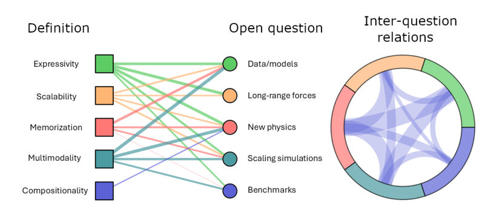
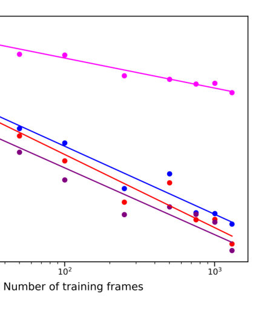
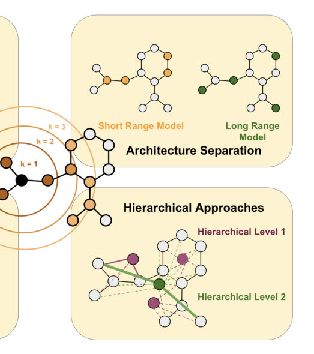
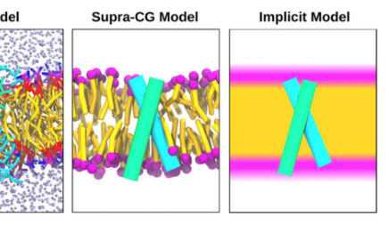
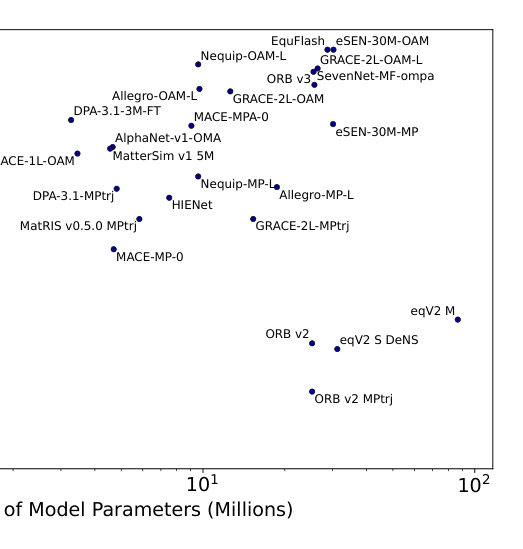
Summary. This paper surveys the rapidly advancing field of Machine-Learned Interatomic Potentials (MLIPs), which promise to bridge the gap between computational scale and accuracy in materials science simulations. It synthesizes current knowledge by defining a set of six fundamental, unanswered questions that researchers must tackle regarding model expressivity, data requirements, and physical generalization.
Why it may be interesting. While focused on condensed matter, the rigorous framework for analyzing model limitations (expressivity vs. data scaling) mirrors challenges in developing complex quantum simulation methods that rely on scalable neural representations.
Main problem. The field of Machine-Learned Interatomic Potentials (MLIPs) needs to define its fundamental boundaries by addressing several open questions regarding model design, data requirements, and physical scope.
Main result. The paper articulates six key open questions—covering expressivity, scalability, memorization, multimodality, and compositionality—that must guide future research in foundation MLIP models.
Method. A conceptual framework is developed by adapting general AI foundation model taxonomies to the specific physical constraints and mathematical structures of interatomic potentials.
Model / system. The focus is on Machine-Learned Interatomic Potentials (MLIPs) used to approximate the Born-Oppenheimer potential energy surface for molecular and materials systems. These models aim to replace traditional, physically parameterized force fields.
Key observables. Potential energy, atomic forces, stresses, thermodynamic properties, and prediction accuracy across various physical regimes (e.g., defect formation energies).
Important parameters / regimes. Model expressivity, dataset size/diversity, computational cost, and the incorporation of physical symmetries like $E(3)$-equivariance.
Assumptions / limitations. The primary assumption is that progress in MLIPs requires addressing fundamental theoretical limitations rather than just incremental architectural improvements or data scaling alone.
Figures summary. Figure 1 maps general AI foundation model criteria (expressivity, etc.) to the six open questions for MLIPs. Other figures illustrate performance gains versus training set size using specific architectures like NequIP.
Paper structure. The paper introduces the context of MLIPs, defines a working concept of 'foundation' models, and then systematically explores and articulates the six most critical unanswered questions defining the cutting edge of research in this domain.
Machine-learned interatomic potentials (MLIPs) have had a profound impact on molecular modelling in recent years, promising to resolve the long-standing tension between the scale and accuracy of simulations. There has been a proliferation of new models and designs, and recently the paradigm of ``foundational'' MLIPs has become prevalent. Broadly speaking, foundation models are trained on large diverse datasets and promise to work well for new systems with minimal updates required. However, in such a new and fast moving field, there are many unanswered questions. In this article, we set out to articulate and explore what we see as the most important among these questions. We start by developing a working definition for foundational MLIPs and use this definition to frame the subsequent open questions. Despite the rapid progress in the field of MLIP models, we believe that these are fundamental questions which will continue to define cutting edge research in MLIPs in the years to come.
Authors: Bangye Qin, Dmitry D. Khalyavin, Ran Liu, Kazunari Yamaura, Alexei A. Belik, Roger D. Johnson
Type: experiment · Category: strongly correlated electrons · PDF: https://arxiv.org/pdf/2606.07137v1
Analysis basis: full PDF text, analyzed in chunks
Topic relevance: analog quantum simulation 1/5 · exotic spin models in light-matter 1/5 · spintronics-quantum-optics interface 1/5
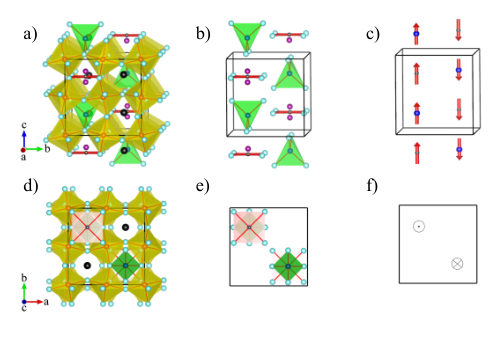
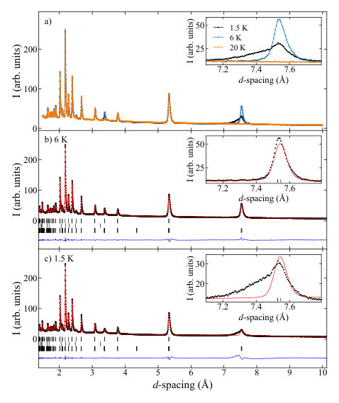
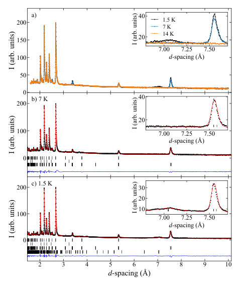
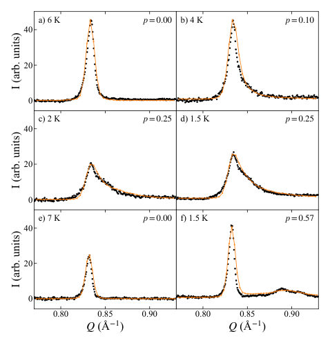
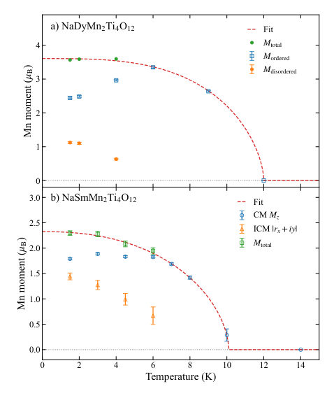
Summary. The study reports on a novel 'order-by-heating' phenomenon in perovskite antiferromagnets where the material enters a disordered state at low temperatures. Using neutron diffraction, the authors characterize this disorder as stacking faults whose nature is controlled by the rare earth element. This establishes a new mechanism for magnetic phase transitions driven by coupling between chemical disorder and competing exchange interactions.
Why it may be interesting. This work provides an experimental realization of complex, non-standard phase transitions in magnetic insulators, linking structural disorder (A-site vacancies) directly to the emergence/disappearance of long-range magnetic order via thermal cycling.
Main problem. The study investigates an unconventional magnetic transition where long-range 3D antiferromagnetic order appears upon heating from a disordered ground state, termed 'inverse melting'.
Main result. Both $ ext{NaDyMn}2 ext{Ti}_4 ext{O}}$ and $ ext{NaSmMn2 ext{Ti}_4 ext{O}$ exhibit this inverse melting, with the specific nature of the disorder (Ising-like faults vs. spin canting) dictated by the rare earth ion's anisotropy.
Method. The research relies heavily on Neutron Powder Diffraction (NPD) measurements across a temperature range and Rietveld refinement analysis to characterize magnetic correlations.
Model / system. The physical system is columnar-ordered quadruple perovskites, $ ext{NaRMn}2 ext{Ti}_4 ext{O}$), which possess multiple magnetic sublattices and intrinsic A-site chemical disorder.}$ ($ ext{R} = ext{Dy}, ext{Sm
Key observables. Magnetic Bragg intensities, peak broadening (indicating dimensionality of order), incommensurate satellite reflections, and the temperature dependence of the Mn magnetic moment.
Important parameters / regimes. Temperature range (1.5 K to 20 K); rare earth ion type ($ ext{Dy}^{3+}$ vs $ ext{Sm}^{3+}$) which controls anisotropy; stacking fault probability ($p$).
Assumptions / limitations. The disorder can be modeled using magnetic stacking faults, and the transition mechanism is governed by competing exchange interactions coupled to A-site disorder.
Figures summary. Figures show NPD patterns at various temperatures for both compounds, illustrating peak changes below $T^*$. One figure compares experimental $\{100\}$ peaks with calculated patterns derived from fault models, demonstrating temperature dependence of the fault probability.
Paper structure. The paper analyzes NPD data to characterize the magnetic ground state (disordered) and tracks its evolution upon warming into a 3D ordered phase. The analysis distinguishes between different types of disorder based on rare earth chemistry and uses computational modeling to fit observed peak changes.
In conventional antiferromagnets a long-range ordered 3D ground state transitions to a disordered paramagnetic state on warming, often via lower dimensional spin correlations within the critical regime. Here we demonstrate a striking departure from this paradigm. Through analysis of neutron powder diffraction data, we show that the magnetic ground state of columnar-ordered quadruple perovskites, Na$R$Mn$_2$Ti$_4$O$_{12}$ ($R$ = Dy, Sm), lacks long-range order, hosting only 2D spin correlations. On warming, this disordered state transitions into a 3D long-range ordered antiferromagnetic structure prior to the phase transition to the paramagnetic state. Our results establish an unconventional order-by-heating mechanism in which intrinsic A-site chemical disorder is coupled to competing exchange interactions between the rare earth and Mn sub-lattices, leading to a novel type of magnetic phase transition.
Authors: Richard D. Barney, Sharba Bhattacharjee, Victor Galitski, Kartiek Agarwal, Ivar Martin
Type: theory · Category: disordered systems and neural networks · PDF: https://arxiv.org/pdf/2606.06597v1
Analysis basis: full PDF text, analyzed in chunks
Topic relevance: Keldysh / 2PI / non-Gaussian methods 1/5 · analog quantum simulation 1/5 · driven-dissipative phase transition 1/5
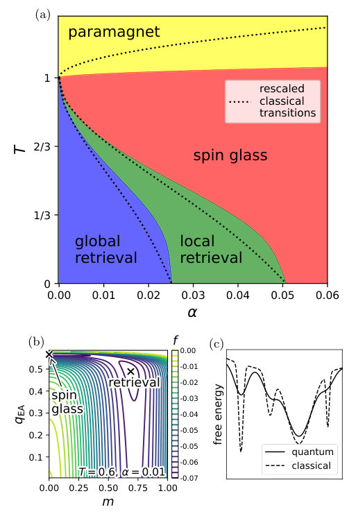
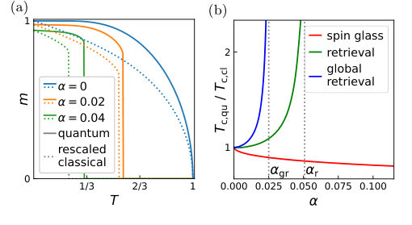
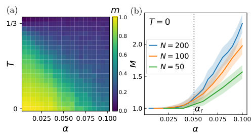
Summary. This paper analyzes the Quantum Vector Hopfield Network to study associative memory. It theoretically demonstrates that intrinsic quantum fluctuations enhance pattern retrieval stability compared to classical models. The findings suggest a mechanism analogous to quantum order-by-disorder for building robust quantum memories.
Why it may be interesting. It provides a theoretical framework showing how fundamental quantum mechanical principles (non-commutativity) can stabilize complex ordered phases in artificial memory systems, offering insights into quantum enhancement of information storage.
Main problem. To investigate how quantum fluctuations affect pattern retrieval stability in associative memory models compared to their classical counterparts.
Main result. Quantum fluctuations surprisingly stabilize stored patterns, enhancing both the critical retrieval temperature and target pattern overlap relative to the classical network. This effect is interpreted as an analog of quantum order-by-disorder.
Method. The study uses advanced theoretical techniques including the replica method, free energy calculations, and analyzing corrections ($\Delta f$) due to quantum fluctuations in the Hamiltonian.
Model / system. The model is the Quantum Vector Hopfield Network (QVHN), a quantization of the classical vector network. Patterns are encoded using continuous unit vectors, and dynamics arise from non-commuting spin operators.
Key observables. Overlap with stored patterns ($m_{\mu}$), connected spin autocorrelation ($q$), Edwards-Anderson order parameter ($q_{EA}$), and free energy density ($f$).
Important parameters / regimes. Pattern loading ($\alpha = p/N$), temperature ($T$), and the network capacity limit ($\alpha_r$).
Assumptions / limitations. The analysis relies on approximations such as the replica symmetric ansatz, static approximation (time-independent order parameters), and mean-field theory.
Figures summary. Figures compare phase diagrams showing retrieval states are retrievable up to higher loading in QVHN than CVHN; free energy landscapes illustrate quantum fluctuations stabilizing retrieval basins over spin glass minima.
Paper structure. The paper progresses by defining the Hamiltonian and observables, deriving equations of state for both classical and quantum cases using replica methods, comparing stability via free energy analysis, and finally discussing simulation results that confirm quantum stabilization effects.
We introduce the quantum vector Hopfield network, in which patterns are formed by orientations of quantum vector spins; quantum dynamics arise intrinsically from the non-commutativity of the spin operators. We derive the equations of state and the phase diagrams for this network as well as its classical counterpart. We find that quantum fluctuations, surprisingly, stabilize the stored patterns. Both the critical retrieval temperature and the target pattern overlap are enhanced relative to the classical network. Additionally, we find that this enhancement grows with pattern loading up to network capacity. We interpret this effect as an analog of quantum order-by-disorder, a mechanism by which quantum fluctuations promote the formation of ordered phases. These findings offer a new route to quantum-enhanced associative memory.
Authors: Harrison LaBollita, Andrew J. Millis, Olivier Gingras
Type: theory · Category: strongly correlated electrons · PDF: https://arxiv.org/pdf/2606.07199v1
Analysis basis: full PDF text, analyzed in chunks
Topic relevance: Keldysh / 2PI / non-Gaussian methods 1/5 · Kondo & dissipative impurity 1/5 · methods for driven-dissipative 1/5
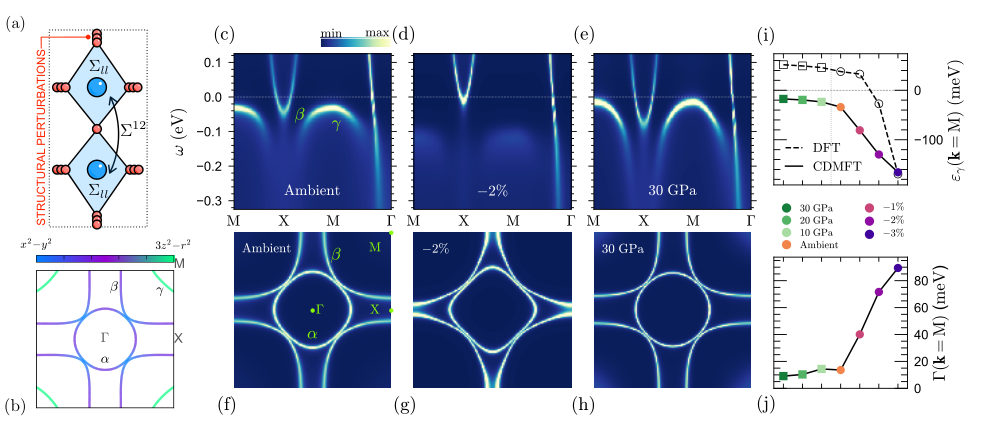
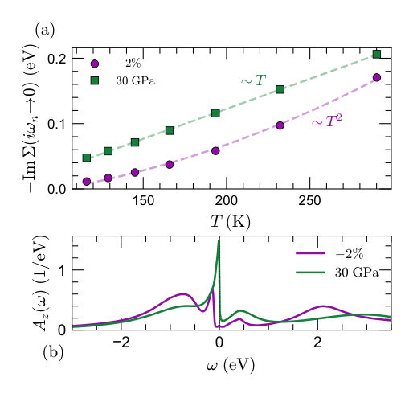
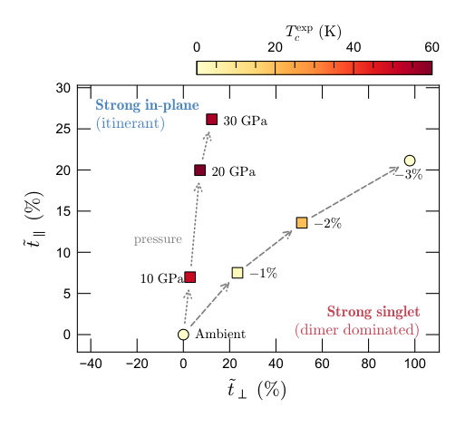
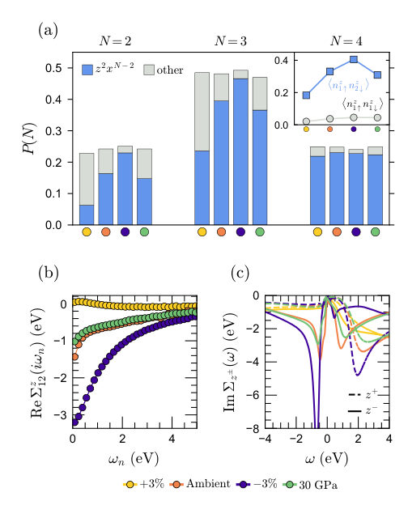
Summary. This work uses advanced computational methods, specifically CDMFT, to model bilayer nickelates under external strain and pressure. It reveals that structural changes tune the system's physics by controlling interlayer 'dynamical singlets.' The findings successfully explain experimental dichotomies in transport properties and provide insights into the mechanism driving high-temperature superconductivity.
Why it may be interesting. The detailed analysis of orbital-selective correlations and the emergence of dynamical singlets provide a rich theoretical framework for understanding unconventional superconductivity mechanisms in strongly correlated oxides.
Main problem. The study aims to understand how structural changes, specifically hydrostatic pressure and epitaxial strain, tune the normal state electronic structure of bilayer Ruddlesden-Popper nickelates.
Main result. The physics is governed by interlayer 'dynamical singlets' formed from $3z^2-r^2$ orbitals hybridized with planar $x^2-y^2$ orbitals, and pressure/strain induce distinct electronic responses (e.g., T-linear vs. T^2 resistivity).
Method. The authors employ Cluster Dynamical Mean-Field Theory (CDMFT) coupled with DFT calculations to model the correlated electron behavior.
Model / system. The system is bilayer Ruddlesden-Popper nickelates ($ ext{La}_3 ext{Ni}_2 ext{O}_7$), modeled using a four-orbital Wannier representation for Ni-$e_g$ orbitals, incorporating Hubbard-Kanamori interactions.
Key observables. Low-energy spectral function $A(\mathbf{k}, \omega)$, scattering rate $\Gamma(T)$, mass renormalization ($m^*/m_{ ext{band}}$), and orbital occupation probabilities $P(N)$.
Important parameters / regimes. Hydrostatic pressure (up to 30 GPa) and epitaxial strain (e.g., $-2\%$), Hubbard interaction parameters ($U, U', J$).
Assumptions / limitations. The low-energy model is restricted to four $e_g$ orbitals; calculations are performed using the bonding-antibonding basis.
Figures summary. Figures illustrate spectral functions and Fermi surfaces under varying strain/pressure; other figures show temperature dependence of scattering rates ($\Gamma$) and orbital-resolved self-energies ($\Sigma(\omega)$) for both structural perturbations.
Paper structure. The paper systematically maps the effect of external structural tuning (pressure vs. strain) on the correlated electronic structure, contrasting results from CDMFT against experimental observations like ARPES and transport measurements.
We present realistic calculations within the density functional plus cluster dynamical mean-field formalism indicating that the physics of the the bilayer Ruddlesden-Popper nickelates is to a significant extent controlled by interlayer "dynamical singlets'' which are formed from the $3z^{2}-r^{2}$ orbitals singly occupied by electrons and are hybridized with itinerant planar $x^{2}-y^{2}$ orbitals. The hybridization is found to respond differently to hydrostatic pressure and to epitaxial strain, capturing the experimentally observed dichotomy between bulk single crystals and epitaxial thin films and reproducing several experimental results including angle-resolved photoemission and transport measurements.
Authors: Ran-Chen He, Jia-Xi Zeng, Shu Yang, Cong Wang, Qi-Jun Ye, Xin-Zheng Li
Type: theory · Category: statistical mechanics · PDF: https://arxiv.org/pdf/2606.07415v1
Analysis basis: full PDF text, analyzed in chunks
Topic relevance: Keldysh / 2PI / non-Gaussian methods 1/5
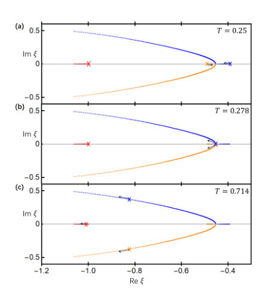
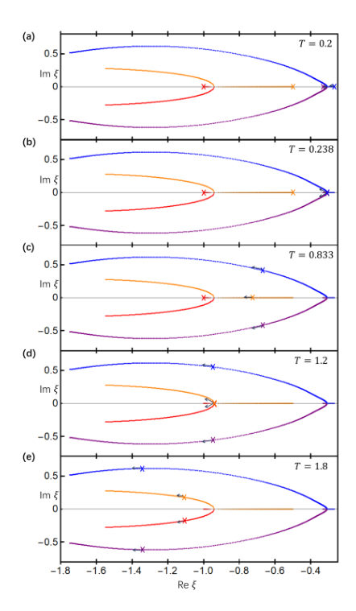
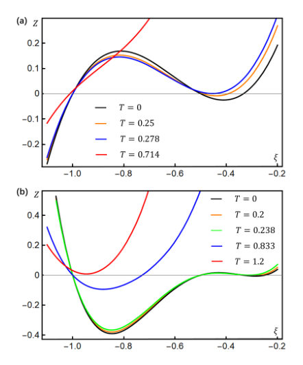
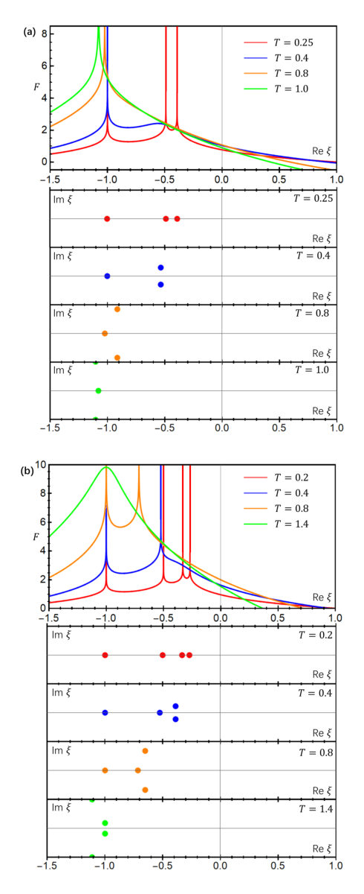
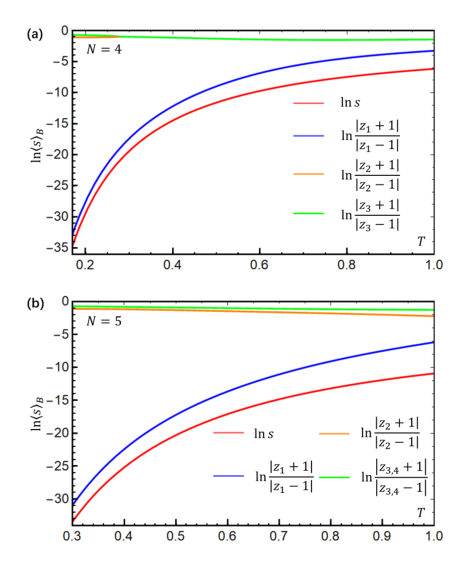
Summary. The paper tackles the challenging issue of calculating fermionic properties at low temperatures where standard analytic continuation techniques fail due to Lee-Yang zeros. Using a solvable 1D model, the authors map out how these zeros move with temperature and propose a reliable two-step fitting strategy that bypasses the singularities, offering a benchmark for diagnosing computational methods in quantum statistical mechanics.
Why it may be interesting. This work provides crucial theoretical diagnostics for computational methods tackling the fermion sign problem in many-body physics, suggesting a generalizable protocol applicable to more complex interacting systems.
Main problem. The primary goal is understanding how Lee-Yang (LY) zeros of the exchange parity $\xi$ evolve with temperature ($T$) to diagnose the limitations of analytic continuation methods for calculating fermionic properties.
Main result. The authors propose a two-step strategy: first, extrapolating reliable high-$T$ data from sign-problem-free regions ($\xi \in [0, 1]$) to $\xi = -1$, and second, performing a temperature fit on the resulting fermionic partition function remainder $\phi(\beta)$.
Method. The analysis uses an analytically solvable noninteracting 1D particle-on-a-ring model to derive explicit polynomial forms for the partition function $Z(\beta, \xi)$ and track the trajectories of its zeros in the complex $\xi$-plane.
Model / system. The system is a noninteracting one-dimensional particle-on-a-ring model with $N$ particles. The physics is governed by the partition function $Z(\beta, \xi)$, which depends on temperature ($\beta$) and the exchange parity parameter $\xi$.
Key observables. Lee-Yang (LY) zeros of $\xi$, the free energy $F(T, \xi)$, and the sign factor $\langle s \rangle_B$ that governs fermionic contributions.
Important parameters / regimes. Temperature ($T$) or inverse temperature ($\beta$), the exchange parity parameter ($\xi$), and the number of particles ($N$).
Assumptions / limitations. The initial analysis is restricted to noninteracting systems, serving as a solvable benchmark for diagnosing continuation methods.
Figures summary. Figures illustrate the trajectories of LY zeros in the complex $\xi$-plane as $T$ changes (showing movement off the real axis at high $T$), and demonstrate the failure of direct extrapolation versus the success of the proposed two-step temperature fitting strategy.
Paper structure. The paper first establishes the model using an analytically solvable noninteracting system. It then analyzes how the trajectories of LY zeros dictate the analyticity of thermodynamic quantities. Finally, it proposes and validates a robust two-step procedure for calculating low-$T$ fermionic properties by combining high-$T$ extrapolation with temperature fitting.
Beyond the analysis of the Lee-Yang (LY) zero of $ξ$ at $0$ K presented by our previous work [He et. al. Phys. Rev. E 113, 24115 (2026)], it is important but intricate to understand how these zeros evolve with temperature ($T$). Here, we use an analytically solvable noninteracting one-dimensional particle-on-a-ring model to address this. We determine the trajectories of these zeros and analyze how their evolution with $T$ reshapes the analytic structure of the partition function. In particular, the zero originating from $ξ=-1$ at $T=0$ remains close to $-1$ at low $T$, where it governs the sign factor and strongly constrains continuation along the real $ξ$ axis. This explains why both direct extrapolation and implicit schemes such as contour-based fitting can fail in the low-$T$ regime, even at high fitting order, while becoming reasonable again once the relevant zeros move away at higher $T$s. Furthermore, based on the polynomial structure of the partition function, we propose a new fitting strategy for low-$T$ fermionic properties. The key is to first obtain reliable high-$T$ fermionic properties by continuing sign-problem-free data in $ξ\in[0,1]$ to $ξ=-1$, and then extend this information toward lower $T$ through $T$-fitting of the $ξ$-independent remainder $φ(β)=Z_{\text{F}}$. These results provide a solvable benchmark for diagnosing the validity of analytic continuation and suggest a possible route toward treating more realistic interacting fermionic systems.
Papers from primary archives without highlighted authors or any topic match. Click to expand.
Authors: Gabriel Kuderowicz, Bartlomiej Wiendlocha
Type: theory · Category: strongly correlated electrons · PDF: https://arxiv.org/pdf/2606.07184v1
Analysis basis: full PDF text, analyzed in chunks
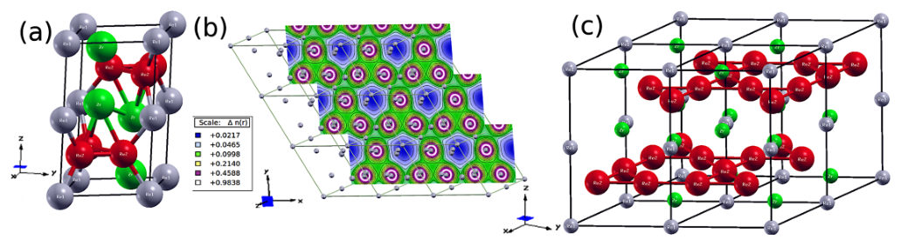
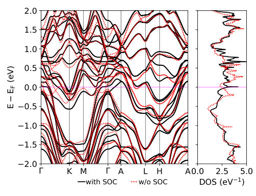
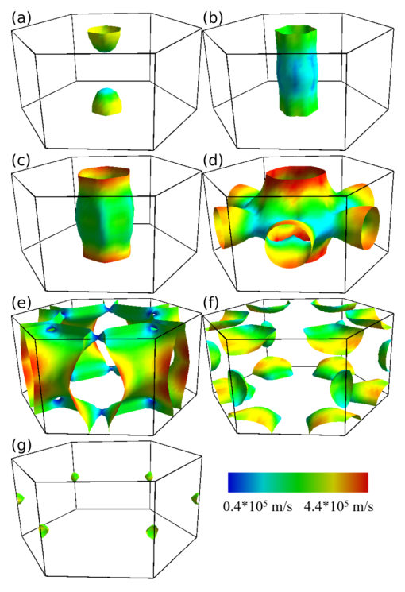
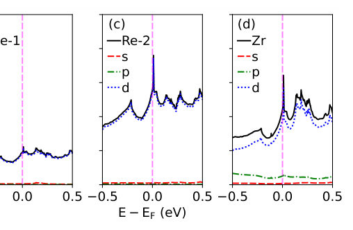
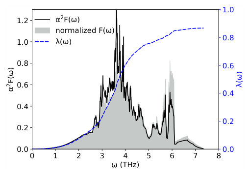
Summary. This work investigates superconductivity in Re2Zr using advanced first-principles calculations to test conventional phonon-mediated theories. The results show that the superconducting energy scale is quantitatively reproduced by this model, revealing strong multiband and anisotropic gap features. Crucially, including spin fluctuations successfully lowers the predicted critical temperature to match experimental values, though it cannot explain the suggested time-reversal symmetry breaking.
Why it may be interesting. While focused on conventional BCS theory, the explicit calculation of multiband effects, anisotropic gaps, and the quantitative inclusion of electron-phonon coupling alongside spin fluctuations provides a rich theoretical framework for understanding complex pairing mechanisms in strongly correlated materials.
Main problem. To determine if superconductivity in Re2Zr, despite experimental hints of unconventional pairing (like time-reversal symmetry breaking), can be quantitatively explained using a conventional phonon-mediated framework.
Main result. The superconducting energy scale is successfully reproduced within a conventional phonon-mediated model, revealing pronounced multiband and anisotropic gap structures. However, the origin of the suggested time-reversal symmetry breaking remains an open question.
Method. First-principles calculations using Density Functional Theory for superconductors (SCDFT) were employed to calculate electronic structure, electron-phonon coupling ($\lambda$), and superconducting gaps ($\Delta$).
Model / system. The study focuses on the hexagonal kagome-lattice superconductor Re2Zr. Calculations incorporate spin-orbit coupling (SOC) and treat the system as a multiband superconductor with seven distinct Fermi surface sheets.
Key observables. Superconducting critical temperature ($T_c$), electron-phonon coupling constant ($\lambda \simeq 0.88$), superconducting gap anisotropy, and the density of states at the Fermi level ($N(E_F)$).
Important parameters / regimes. Experimental $T_c = 6.65 ext{ K}$; calculated $\lambda$; spin fluctuation effects (which reduce $T_c$ from $7.7 ext{ K}$ to $6.4 ext{ K}$).
Assumptions / limitations. The primary assumption is the validity of a conventional phonon-mediated pairing mechanism within the singlet state approximation, despite discrepancies with some experimental observations.
Figures summary. Figures illustrate electronic band structures (with/without SOC), Fermi surface sheets showing mixed 2D-3D character, and gap distributions confirming multiband anisotropy across different FS sheets.
Paper structure. The paper progresses by first establishing the electronic structure using DFT with SOC, then calculating electron-phonon coupling ($\lambda$), and finally solving the superconducting gap equation (SCDFT) while incorporating spin fluctuation corrections to match the experimental $T_c$.
We present a first-principles investigation of the electronic structure, lattice dynamics, electron-phonon coupling, and superconducting properties of the hexagonal kagome-lattice compound Re$_2$Zr, in which time-reversal symmetry breaking and unconventional pairing have recently been proposed. We examine whether superconductivity in Re$_2$Zr can be explained within a conventional phonon-mediated framework by performing fully ab initio calculations within the density functional theory for superconductors. The electronic structure is characterized by a mixture of seven two- and three-dimensional Fermi surface sheets, giving rise to multiband superconductivity with many overlapping superconducting gaps. A spin-orbit-induced van Hove singularity is identified in the density of states near $E_F$. The electron-phonon interaction is moderately strong, with a coupling constant $λ\simeq 0.88$. Superconducting gap calculations reveal significant anisotropy and a broad distribution of gap values across different Fermi surface sheets. Spin fluctuations introduce additional depairing effects and reduce the critical temperature from 7.7 K to 6.4 K, in excellent agreement with the experimental value of 6.65 K. Taken together, our results show that the superconducting energy scale in Re$_2$Zr can be quantitatively reproduced within a conventional phonon-mediated framework, while the resulting state exhibits pronounced multiband and anisotropic gap structure. The origin of the experimentally suggested time-reversal symmetry breaking, however, remains an open question.
Authors: Thomas Dumontier, Robin Ollive, Stephane Louise
Type: both · Category: quantum information and computing · PDF: https://arxiv.org/pdf/2606.07084v1
Analysis basis: full PDF text, analyzed in chunks
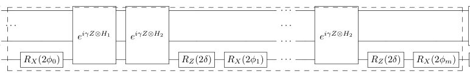
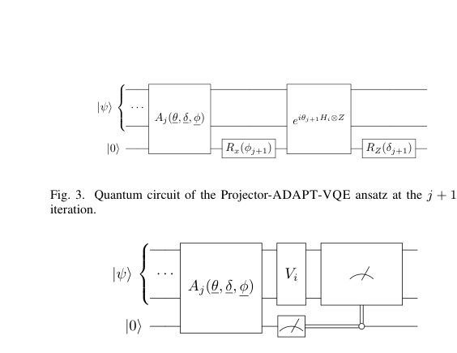
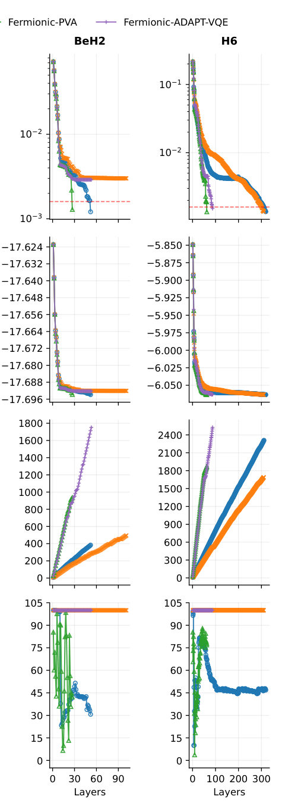
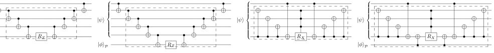
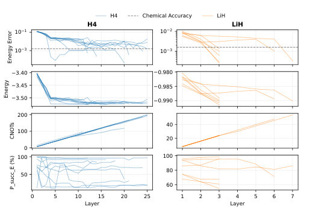
Summary. The paper introduces the Projector Variational Ansatz (PVA), a novel VQE structure designed to incorporate principles from fault-tolerant quantum computing. By using ancillary qubits for subspace projection, PVA improves upon standard ADAPT-VQE by achieving chemical accuracy with shallower circuits and fewer required variational parameters on small molecules.
Why it may be interesting. This work directly addresses the resource scaling challenge in quantum chemistry simulation, proposing an algorithmic modification (PVA) that aims to reduce circuit depth—a critical bottleneck for implementing complex Hamiltonians on near-term hardware.
Main problem. The primary goal is to efficiently compute the ground state energy of a problem Hamiltonian using quantum algorithms, particularly in the Noisy Intermediate Scale Quantum (NISQ) regime.
Main result. The proposed Projector Variational Ansatz (PVA) demonstrates convergence with shallower circuits than standard ADAPT-VQE variants for molecular simulations, achieving chemical accuracy with fewer required layers.
Method. The work develops and compares several variational ansatz structures (like PVA) designed to mimic the projector nature of Fault Tolerant Quantum Computing (FTQC) algorithms within the VQE framework. These methods are optimized using classical optimizers like L-BFGS-B or SPSA, sometimes requiring post-selection via ancillary qubits.
Model / system. The simulations focus on molecular electronic structure calculations ($ ext{H}_4$, $ ext{BeH}_2$, etc.), where the Hamiltonian is derived from fermionic operators and mapped onto qubit Pauli strings using Jordan-Wigner transformation. The initial state is typically the Hartree-Fock reference state.
Key observables. Energy Error ($\Delta E$), CNOT Count (circuit depth), Success Probability ($P_{ ext{succ}}$), and convergence rate relative to standard ADAPT methods.
Important parameters / regimes. The NISQ regime constraints, ansatz parametrization $\{ heta\}$, and the required chemical accuracy threshold ($\Delta E < 1.6 imes 10^{-3} ext{ Ha}$).
Assumptions / limitations. The primary assumption is that incorporating projector-like structures into VQE can bridge the gap between shallow NISQ circuits and deep, high-fidelity FTQC algorithms.
Figures summary. Figures illustrate quantum circuits for various ansatzes (ISQ-QSP, ADAPT-VQE, PVA) and show convergence plots comparing energy error versus circuit layers/CNOTs for different molecules ($ ext{H}_4$, $ ext{LiH}$).
Paper structure. The paper first introduces the limitations of NISQ algorithms compared to FTQC methods. It then proposes the PVA ansatz structure, detailing its mathematical equivalence and implementation via ancillary qubits. The core is a comparative study showing PVA's superior performance over standard ADAPT-VQE across multiple molecular systems under both exact statevector and finite-shot simulations.
Quantum computing offers several algorithms to compute the ground state of a problem Hamiltonian. The most desirable algorithms belong to the Fault Tolerant QuantumComputing (FTQC) regime, such as quantum algorithms with repetitive structure like Quantum Phase Estimation (QPE) and Quantum Signal Processing (QSP). However, in the Noisy In-termediate Scale Quantum (NISQ) regime, the most realistic approaches involve Variational Quantum Eigensolver (VQE) algorithms and their variants. VQE is an algorithm that searches for a parametrized unitary matrix called an ansatz whose purposeis to transform an easily prepared initial state into the groundstate of a given Hamiltonian. Adaptive Derivative-AssembledPseudo-Trotter (ADAPT)-VQE is a variant of VQE that im-proves this approach by constructing the ansatz iteratively so that the associated quantum circuit is as shallow as possible. A major difference between FTQC (i.e. not variational) algorithms and VQE is that FTQC algorithms do not construct a state transitiondirectly. Instead, they construct a projector that identifies the ground state using ancillary qubits that flag the good solution. The desired state is then obtained via amplitude amplification orpost-selection. In this work, we propose a VQE ansatz whose structure is more similar to that of an FTQC algorithm. Depending on its parametrization, this ansatz can be equivalent to either an Intermediate Scale Quantum (ISQ)-QSP or to an ADAPT-VQE quantum circuit structure. Our experimental results show that this first proposal of Projector Variational Ansatz (PVA) converges with a shallower ansatz than the usual ADAPT-VQE.
Authors: Benjamin de Zayas, Clara Rojas
Type: theory · Category: other · PDF: https://arxiv.org/pdf/2606.07320v1
Analysis basis: full PDF text, analyzed in chunks
Summary. This theoretical paper proves that the Klein-Gordon equation with an $\alpha$-attractor potential is strictly non-integrable. Using Differential Galois Theory, the authors demonstrate that the system's associated differential equations have a non-solvable Galois group ($SL(2, \mathbb{C})$). This mathematically rules out any possibility of finding solutions using elementary functions or known special functions.
Why it may be interesting. While focused on relativistic quantum mechanics rather than AMO systems directly, the rigorous application of advanced mathematical tools (Differential Galois Theory) to determine the fundamental solvability limits of a physical model is highly relevant for understanding when complex Hamiltonians can be solved analytically in any field of physics.
Main problem. The study investigates the analytical solvability (integrability) of a Klein-Gordon type equation featuring an $\alpha$-attractor potential.
Main result. The differential Galois group is found to be $SL(2, \mathbb{C})$, which is non-solvable, proving that no Liouvillian solutions exist and the system cannot be expressed as a composition of classical special functions.
Method. Advanced techniques from Differential Galois Theory (Picard-Vessiot theory) were employed to analyze the associated Riccati equation and determine the structure of the differential Galois group.
Model / system. The model is a scalar particle governed by a Klein-Gordon type equation in one dimension, interacting with the transcendental $\alpha$-attractor potential $V(x) = V_0 e^a \tanh(bx)$.
Key observables. The differential Galois group of the system; the existence or non-existence of Liouvillian solutions.
Important parameters / regimes. $E$ (Energy), $m$ (mass), $V_0, a, b$ (potential parameters).
Assumptions / limitations. The analysis assumes that solvability in terms of special functions implies the differential Galois group must be solvable.
Paper structure. The paper proceeds by transforming the physical equation into a normal form, analyzing the associated Riccati equation using techniques like the Kovacic algorithm, and ultimately determining the structure of the differential Galois group to prove non-integrability.
This study investigates the analytical solvability of the Klein-Gordon and Duffin-Kemmer-Petiau (DKP) equations for a scalar particle interacting with a transcendental $α$-attractor-type potential, $V(x) = V_0 e^{a \tanh(bx)}$. We first address the problem of integrability within the framework of Picard-Vessiot theory. By analyzing the differential field extensions associated with the system, we demonstrated that the differential Galois group is the full special linear group $SL(2, \mathbb{C})$. Given that this group is not solvable, we provide rigorous proof for the non-existence of Liouvillian solutions, effectively ruling out any expression in terms of primitives and elementary functions. Building upon this result, we further establish that wavefunctions cannot be represented as finite compositions or transformations of classical special functions, such as those of the Bessel, Whittaker, or Heun families. This second conclusion is supported by the ``double-transcendence'' of the potential; we prove via the Hermite-Lindemann theorem that no rational coordinate transformation $z(x)$ exists that could map the physical equation into an ordinary differential equations(ODE) with rational coefficients. Consequently, the $α$-attractor potential is strictly non-integrable and lies entirely outside the landscape of solvable relativistic quantum systems.
Authors: An B. B. Pham, Hoa T. Nguyen, Muhammad Usman
Type: experiment · Category: quantum information and computing · PDF: https://arxiv.org/pdf/2606.07314v1
Analysis basis: full PDF text, analyzed in chunks

Summary. This paper introduces QBugLM, a novel multi-agent framework designed to automatically benchmark and repair bugs in quantum software written in OpenQASM 3.0. By systematically injecting various bug types and testing LLMs like Claude and Qwen, the authors demonstrate that iterative refinement is key to successful debugging. The work provides practical insights into using AI for automated quantum code repair.
Why it may be interesting. While focused on software engineering, the rigorous testing of quantum algorithms (like Deutsch-Jozsa or Grover) against systematic bugs provides benchmarks for validating complex quantum circuit implementations, which is crucial for any physical realization of quantum computation.
Main problem. Quantum software bugs often result in silent, incorrect outputs, making them hard to detect; a systematic benchmark for LLM debugging of quantum code is needed.
Main result. Iterative feedback significantly boosts repair success (Pass@1 from <25% to >80%), and simpler structured prompting can outperform CoT/ReAct under resource constraints.
Method. The authors developed QBugLM, a multi-agent framework that automates bug injection (QBugGen), detection (QBugFind), repair (QBugFix), and validation (QBugCheck) for OpenQASM 3.0 code.
Model / system. The focus is on debugging quantum programs written in the OpenQASM 3.0 standard, tested across five canonical circuits (Deutsch-Jozsa, Grover, etc.) using a multi-agent LLM pipeline.
Key observables. Pass@1 metric for repair success, Total Variation Distance ($\delta$) for output comparison, and gate count difference $| ext{Gref} - ext{Gfixed}|$.
Important parameters / regimes. The number of retries ($K$), the acceptable distance threshold ($\varepsilon_\delta = 0.05$), and resource constraints (token/cost).
Assumptions / limitations. Validation assumes execution on a noiseless quantum simulator to isolate logical errors from hardware noise.
Figures summary. Figures illustrate the QBugLM pipeline, show Pass@1 improvements across prompting strategies (Structured > CoT/ReAct), and compare performance metrics like token consumption vs. accuracy at multiple retry levels.
Paper structure. The paper introduces the QBugLM framework components (QBugGen, QBugFind, QBugFix, QBugCheck) and then conducts a comprehensive case study benchmarking LLMs across different bug types and prompting strategies to evaluate repair efficacy and cost-efficiency.
Quantum software bugs often yield silent, incorrect outputs rather than explicit errors, making them particularly difficult to detect and repair with conventional techniques. Although large language models (LLMs) have shown strong performance on classical software engineering tasks, their ability to debug quantum code remains largely unexplored. To bridge this gap, we propose QBugLM, a multi-agent framework that automates the quantum software debugging pipeline, from taxonomy-driven bug injection to LLM-based detection and repair, and finally to simulation-based validation, for framework-agnostic OpenQASM 3.0 programs. We further conduct a comprehensive case study using QBugLM to benchmark two LLMs, Claude 4.6 Sonnet and Qwen3 Coder Next, across different prompting strategies, bug categories, and quantum programs. Our results show that iterative feedback is critical, as a single retry raises Pass@1 from below 25% to above 80%. Moreover, simpler structured prompting can even outperform Chain-of-Thought and ReAct for reasoning-capable models under fixed-resource constraints. Our work takes initial steps toward benchmarking LLM capabilities for debugging quantum programs and offers practical insights to support future efforts in automated quantum software repair.
Authors: C. De Lucia, A. Martone, F. A. D'Aniello, A. Mastroianni, G. Nunziata, G. De Gregorio, R. Folprecht, F. Knapp, N. Lo Iudice, P. Vesely
Type: theory · Category: quantum information and computing · PDF: https://arxiv.org/pdf/2606.07035v1
Analysis basis: full PDF text, analyzed in chunks
Summary. This work addresses the challenge of solving massive eigenvalue problems from nuclear physics models using current quantum hardware. It proposes a hybrid approach that encodes the problem into a QUBO solvable by quantum annealing, which is then combined with classical matrix deflation techniques to reconstruct the entire spectrum. This demonstrates a viable path for near-term quantum computation in fundamental many-body physics.
Why it may be interesting. It directly tackles a major computational bottleneck in nuclear structure theory by proposing a concrete, near-term quantum algorithm (QA on QUBO) to solve complex many-body eigenvalue problems that are central to understanding quantum dynamics.
Main problem. The core problem is solving large-scale eigenvalue problems arising from nuclear many-body theory, which are computationally intractable for exact diagonalization.
Main result. A hybrid quantum-classical algorithm combining quantum annealing with classical deflation was proposed and benchmarked to iteratively extract the full eigenspectrum of both standard and generalized eigenvalue problems.
Method. The continuous eigenvalue problem is mapped onto a Quadratic Unconstrained Binary Optimization (QUBO) formulation, which is then solved using quantum annealing. Full spectrum recovery relies on sequential application of matrix deflation techniques.
Model / system. The method is applied to eigenvalue problems derived from the Equation-of-Motion Phonon Method (EMPM), modeling nuclear structure dynamics in a multiphonon basis.
Key observables. Full eigenspectrum (${\Psi_ u}$), eigenvalues ($E$), and eigenvectors, along with convergence behavior and eigenvalue accuracy.
Important parameters / regimes. Matrix dimensions ($d$), bit resolutions ($b=2, 4$), and the spectral shift parameter used in deflation.
Assumptions / limitations. Quantum Phase Estimation (QPE) is too demanding for current NISQ devices; thus, quantum annealing on QUBO formulations is used as a near-term alternative.
Figures summary. Figures compare accuracy ($\epsilon_p$) and total execution time ($ ext{tet}$) of different deflation methods (Hotelling, Orthogonal Projection, Householder) when solving SEVP/GEVP using both Simulated Annealing and Quantum Annealing.
Paper structure. The paper establishes the physical problem (EMPM eigenvalue equations), details the mapping to QUBO for quantum annealing, outlines iterative refinement via initial guess and descent phases, and finally implements full spectrum reconstruction using classical deflation techniques combined with quantum optimization steps.
The solution of large-scale eigenvalue problems is crucial in nuclear many-body theory, where Hamiltonian matrices often reach extremely large dimensions. Quantum computing opens new perspectives for addressing such demanding problems. Although the Quantum Phase Estimation algorithm offers, in principle, a systematic route to matrix diagonalization, its practical deployment demands levels of coherence and error correction that current quantum hardware cannot yet support. A viable near-term strategy is instead to exploit quantum annealing, which enables the recasting of eigenvalue problems into quadratic unconstrained binary optimization formulations that can be addressed by existing annealing-based processors. Here, we propose a hybrid quantum-classical algorithm that combines quantum annealing and classical deflation to iteratively extract the full eigenspectrum of both standard and generalized eigenvalue problems. We benchmark this method on eigenvalue problems arising from the Equation of Motion Phonon Method performing calculations on real quantum hardware. Our approach illustrates the capabilities and limitations of near-term quantum devices in addressing nuclear eigenvalue problems.
Authors: Xujun Bai, Yun Shang, Honghong Lin
Type: theory · Category: quantum information and computing · PDF: https://arxiv.org/pdf/2606.07322v1
Analysis basis: full PDF text, analyzed in chunks
Summary. This paper develops a quantum divide-and-conquer algorithm to solve the TSP, aiming for an exponential speedup over classical methods. It achieves this by designing an efficient structured quantum state preparation technique that encodes set partitions and minimizes the required query complexity to $O^*(1.865666\dots^n)$. The work is significant because it provides a detailed theoretical framework showing how to overcome previous limitations in analyzing quantum advantage for combinatorial optimization.
Why it may be interesting. It provides deep theoretical insights into achieving genuine quantum speedups for classically hard problems by carefully analyzing the overheads associated with state preparation versus search space reduction.
Main problem. The paper addresses the Traveling Salesman Problem (TSP), an NP-hard combinatorial optimization problem, aiming to find a quantum algorithm with an improved exponential base over classical bounds.
Main result. The authors propose a quantum divide-and-conquer strategy achieving an optimal query complexity of $O^*(1.865666\dots^n)$ for TSP, which they claim surpasses the corrected analysis of previous quantum approaches and is superior to the classical Held-Karp bound.
Method. The method combines classical dynamic programming with a novel quantum search component implemented via a structured state preparation technique (set partition state) and utilizing QFT shortcuts in simulation.
Model / system. The model is abstract, focusing on qubit manipulation to encode set partitions and Hamiltonian cycles. The system involves constructing complex quantum circuits using controlled gates, Dicke states, and simulating the oracle operation via a structured state preparation module.
Key observables. Query complexity (the exponential base of the time/query requirement), gate complexity ($O(n^2)$ or $O(n^2 \log n)$), and circuit depth ($O(n)$).
Important parameters / regimes. The optimal number of subsets used in the partition ($k=4$) and the associated parameters ($\alpha_i \approx 0.315742$).
Assumptions / limitations. The quantum advantage relies critically on efficiently preparing a structured set partition state, which is assumed to be achievable with polynomial gate complexity despite requiring an exponential number of qubits for full encoding.
Figures summary. Figures illustrate the recursive structure of the TSP solver (e.g., Figure A1), the preparation of ordered 4-partitions using quantum circuits (Figure A7), and simulation results comparing complexities for small $n$ (Table II).
Paper structure. The paper builds by first establishing the classical complexity baseline (Held-Karp), then introducing a parameterized quantum divide-and-conquer spectrum, rigorously correcting the analysis of prior work ([1]), and finally detailing the construction of the state preparation circuits for optimal performance.
The traveling salesman problem (TSP) is a significant classical NP-hard combinatorial optimization problem. In this work, we demonstrate that combining classical dynamic programming with quantum search can yield an achievable quantum advantage for TSP on the basis of excellent work by the authors of~\cite{ambainis2019quantum}. We design the quantum divide and conquer strategy to provide a parameterized spectrum for this combination. The hybrid algorithm proposed in~\cite{ambainis2019quantum} corresponds to a specific case in this spectrum, while the two extremes of the spectrum represent the purely classical Held-Karp and the purely quantum search algorithm, respectively. Within our parameterized spectrum, we prove that the optimal query complexity is $O^*(1.865666\ldots^n)$, achieved with the 4-subset scheme, while the counting in~\cite{ambainis2019quantum} overlooked half of the recursive branches. The correct query complexity of their algorithm is $O^*(2.225880\ldots^n)$ at their chosen parameter ($α\approx0.055362$), and cannot fall below $O^*(2^n)$ for any $α$ - meaning their $8$-subset scheme, correctly analyzed, never surpasses the classical Held-Karp bound. Furthermore, in previous studies on quantum advantages for NP-hard combinatorial optimization problems, researchers focused only on improvements in query complexity. Our work, however, points out that the quantum advantage stems not only from the quadratic speedup of quantum search but also from the structured quantum state preparation. We argue that structured state preparation is indispensable for realizing the oracle operator while maintaining the total time complexity of $O^*(1.865666\ldots^n)$. Therefore, we design an elegant method for preparing the set partition state, which makes our TSP solver practically executable.
Papers from cond-mat.mtrl-sci, mes-hall, other, soft, supr-con. These archives are de-prioritized — they appear at the end regardless of relevance score.
Authors: Christopher Yang, Gil Refael, Mark S. Rudner, Iliya Esin
Type: theory · Category: other · PDF: https://arxiv.org/pdf/2606.06579v1
Analysis basis: full PDF text, analyzed in chunks
Topic relevance: 🔥 non-equilibrium dynamics 5/5 · 🔥 analog quantum simulation 4/5 · 🔥 driven-dissipative phase transition 4/5 · 🔥 methods for driven-dissipative 4/5 · correlated cavity matter 3/5 · non-equilibrium universality 3/5 · Tavis-Cummings & cavity-many-emitter 2/5 · spintronics-quantum-optics interface 2/5 · Keldysh / 2PI / non-Gaussian methods 1/5 · correlated / nonlocal dissipation 1/5 · entanglement & information structure 1/5 · exotic spin models in light-matter 1/5
Summary. The paper proposes using the self-generated intracavity field within an electrically pumped quantum material to achieve Floquet band engineering without external lasers. By analyzing the non-equilibrium steady state, it shows that this process creates a stable periodic drive that modifies electronic bands and results in a measurable anomalous Hall effect. This establishes a highly efficient platform for realizing topological phenomena using only DC bias.
Why it may be interesting. This work directly bridges cavity QED principles with non-equilibrium condensed matter physics by showing how internal feedback mechanisms can generate coherent driving fields, which is a key theme in advanced AMO/quantum optics research.
Main problem. To develop an alternative method for Floquet engineering that uses self-generated cavity fields instead of high-power external lasers to dynamically control band structure and induce a geometric Hall response.
Main result. The system self-organizes into a stable time-periodic limit cycle above threshold, which 'Floquet-dresses' the bands and generates a measurable anomalous Hall conductivity via in-plane DC transport measurements.
Method. Self-consistent determination of the non-equilibrium steady state by solving coupled rate equations for electronic occupations (using Floquet theory) and cavity photon number dynamics.
Model / system. A semiconductor layer (TMD) embedded in an optical cavity, coupled to external leads and acoustic phonons. The system dynamics are governed by light-matter coupling leading to a self-consistent intracavity field buildup.
Key observables. Anomalous Hall conductivity ($\sigma_{xy}$), Floquet gap ($\Delta_F$), and the steady-state photon number ($n^*$).
Important parameters / regimes. Cavity quality factor, dissipation rates, DC bias voltage ($eV_z$), and the ratio of tunneling/recombination rates ($\Gamma/M$).
Assumptions / limitations. The analysis assumes a TMD with broken time-reversal symmetry leading to polarization selection; it treats the cavity field as quasi-static in certain limits.
Figures summary. Figures illustrate the schematic setup, the balance between photon gain and loss determining steady states, the opening of the Floquet gap ($\Delta F$) versus bias voltage, and the resulting photo-induced change in Hall conductivity ($\Delta\sigma_{xy}$).
Paper structure. The paper progresses from establishing the physical problem (avoiding external lasers) to developing the self-consistent model using rate equations for occupations and photon number. It then analyzes the emergence of the periodic drive, the resulting band modification (Floquet dressing), and finally predicts measurable transport signatures like $\Delta\sigma_{xy}$.
Floquet engineering has emerged as a powerful route to dynamically control band structure and topology in quantum materials, but most implementations rely on externally imposed laser fields that are power intensive, difficult to integrate into devices, and weakly coupled to the electronic system. We propose and analyze an alternative paradigm in which a self-generated cavity field Floquet-dresses the electronic bands and produces a geometric Hall response in an electrically driven cavity material system. We consider a semiconductor layer embedded in a cavity and coupled to external leads and a bath of acoustic phonons, where dc pumping leads to the buildup of a coherent intracavity field through light-matter coupling. We determine the resulting nonequilibrium steady state self-consistently and show that, above threshold, the coupled system settles into a stable time-periodic limit cycle with a field amplitude set by the cavity quality factor and dissipation. This emergent periodic field Floquet-dresses the electronic bands and modifies the anomalous Hall response of a material with broken time-reversal symmetry. We demonstrate that the resulting Hall conductivity can be directly probed via in-plane dc transport measurements. Our work establishes a route to self organized Floquet band reconstruction and geometric transport without external laser illumination, highlighting cavity driven steady states as a platform for electrically controlled nonequilibrium phases.
Authors: Harsimran Kaur Mann, Simrandeep Kaur, Harsimran Singh, Yashashwani Garg, Amogh Waghmare, Mohit Kumar Jat, Kenji Watanabe, Takashi Taniguchi, Manish Jain, Aveek Bid
Type: both · Category: strongly correlated electrons · PDF: https://arxiv.org/pdf/2606.06939v1
Analysis basis: full PDF text, analyzed in chunks
Topic relevance: 🔥 analog quantum simulation 4/5 · driven-dissipative phase transition 3/5 · methods for driven-dissipative 3/5 · non-equilibrium dynamics 2/5 · non-equilibrium universality 2/5 · Frenkel-Kontorova 1/5 · Keldysh / 2PI / non-Gaussian methods 1/5 · Kondo & dissipative impurity 1/5


Summary. This work demonstrates that layer polarization, controlled by an external electric field, can drive a Metal-Insulator Transition in graphene moiré superlattices. The MIT occurs selectively for hole doping because the field induces layer-selective coupling to the moiré potential, opening a tunable band gap. This highlights electrical control as a powerful tool for engineering correlated electronic phases.
Why it may be interesting. The concept of using external fields (like electric displacement) to engineer band structure reconstruction and induce correlated insulating phases is highly relevant to controlling quantum states in low-dimensional systems.
Main problem. The study investigates how electrical control of layer polarization can drive a Metal-Insulator Transition (MIT) in multi-band graphene moiré superlattices.
Main result. Applying a perpendicular displacement field ($D$) induces an asymmetry that drives the system into a tunable insulating phase at the hole-doped secondary Dirac point, which is absent for electron doping.
Method. The research combines transport measurements (resistance $R_{xx}$ and quantum capacitance $C_Q$) with theoretical continuum modeling of the Hamiltonian.
Model / system. The platform is an ABA-stacked trilayer graphene (TLG) moiré superlattice formed on hBN. The system's electronic structure is governed by a multi-band Hamiltonian that incorporates layer polarization ($\Delta$) and the periodic moiré potential ($V_{ ext{hBN}}$).
Key observables. Longitudinal resistance ($R_{xx}$), quantum capacitance ($C_Q$), secondary Dirac point (SDP) position, and the energy gap ($E_g$).
Important parameters / regimes. Perpendicular displacement field ($D$) and carrier density ($n$); critical fields like $D_c \sim 0.7 ext{ V/nm}$.
Assumptions / limitations. The analysis relies on continuum models for TLG and assumes that the moiré potential couples selectively to specific layers based on the applied electric field.
Figures summary. Figures illustrate $R_{xx}$ vs. $n$ and $D$, showing sharp resistance increases at the h-SDP when $|D|$ is large, alongside capacitance dips confirming gap opening.
Paper structure. The paper systematically analyzes transport measurements ($R_{xx}, C_Q$) across different doping regimes defined by the sign of $D$. Theory confirms that layer polarization controls the coupling strength to the moiré potential, leading to an asymmetric MIT only for hole doping.
Graphene/hBN moiré superlattices provide a highly tunable platform for exploring emergent quantum phases in low-dimensional systems. Here, we investigate the moiré superlattice formed between hBN and ABA-stacked trilayer graphene (TLG), an inherently multi-band system. We demonstrate that the moiré potential is not merely a perturbation but a tool to hybridize the distinct massless and massive electronic sectors of TLG. By applying a perpendicular displacement field to tune layer polarization, we drive a fundamental reconstruction of the electronic band structure. Specifically, increasing the displacement field evolves the system from a multi-band regime to an effectively single-band regime at low energies, accompanied by a metal--insulator transition at the hole-doped secondary Dirac point. This transition originates from a redistribution of carriers across graphene layers that selectively enhances their coupling to the extrinsic moiré potential. Quantum capacitance measurements provide direct evidence for the suppression of the density of states at the hole-side secondary Dirac point, consistent with gap opening and the emergence of a displacement-field-tuned band gap. Theoretical calculations reproduce these observations and identify layer-selective coupling to the moiré potential as the underlying mechanism. These results demonstrate electrical control of an emergent insulating phase in a low-dimensional moiré system, and highlight that layer polarization and layer-selective coupling in multi-band moiré heterostructures provide a powerful route for engineering topological and correlated phases through band structure reconstruction and electron interactions.
Authors: Dmitry R. Maslennikov, Ben P. Carwithen, Vladimir V. Bruevich, Yichao Cai, Davide Nodari, Navendu Mondal, Xijia Zheng, Beier Hu, Nicola Gasparini, Jarvist M. Frost, Vitaly Podzorov, Artem A. Bakulin
Type: experiment · Category: other · PDF: https://arxiv.org/pdf/2606.06623v1
Analysis basis: full PDF text, analyzed in chunks
Topic relevance: non-equilibrium dynamics 3/5 · Keldysh / 2PI / non-Gaussian methods 1/5 · driven-dissipative phase transition 1/5 · methods for driven-dissipative 1/5 · non-equilibrium universality 1/5
Summary. This work addresses discrepancies in measuring carrier mobility in perovskites by simultaneously employing Hall effect and OPTP spectroscopy on single crystals. By showing quantitative agreement between local (OPTP) and macroscopic (Hall) mobilities, the authors establish a robust benchmark for intrinsic charge transport in soft-lattice semiconductors.
Why it may be interesting. While focused on solid-state physics, the rigorous methodology of linking ultrafast optical measurements to steady-state transport is highly relevant for understanding charge dynamics in complex quantum materials, which often exhibit non-equilibrium behavior.
Main problem. To resolve discrepancies in reported charge carrier mobilities in soft-lattice metal-halide perovskites, which are attributed to heterogeneity across length scales and static disorder.
Main result. The study demonstrated quantitative agreement between local mobility measured by OPTP spectroscopy and macroscopic mobility measured by the Hall effect on single-crystal $ ext{CsPbBr}_3$. This confirms that intrinsic charge transport is achievable in these soft materials.
Method. A novel, integrated device platform was used to perform concurrent Hall-effect (macroscopic) and Optical Pump–Terahertz Probe (OPTP) spectroscopy (local/ultrafast) measurements on the same single crystal.
Model / system. The physical system is epitaxial $ ext{CsPbBr}_3$ single crystals. The analysis compares steady-state transport ($\mu_{ ext{Hall}}$) with ultrafast, photoexcited dynamics ($\mu_{ ext{OPTP}}$), linking local electronic response to bulk electrical properties.
Key observables. Charge carrier mobility ($\mu$), temperature dependence of mobility ($\mu(T)$), and the comparison between $\mu_{ ext{OPTP}}$ and $\mu_{ ext{Hall}}$.
Important parameters / regimes. Room-temperature mobilities ($\sim 30 ext{ cm}^2 ext{V}^{-1} ext{s}^{-1}$); temperature dependence exponents ($b \approx 1.1-1.3$); excitation fluence thresholds (e.g., $40 \, \mu ext{J}/ ext{cm}^2$).
Assumptions / limitations. The primary assumption is that the agreement between $\mu_{ ext{OPTP}}$ and $\mu_{ ext{Hall}}$ signifies a true intrinsic transport regime, free from static disorder limitations.
Figures summary. Figures illustrate device schematics for co-measurement, comparisons of mobility values derived from both techniques across different conditions (temperature/fluence), and plots showing temperature dependence ($\mu(T) \propto T^{-b}$) and fluence-dependent OPTP transients.
Paper structure. The paper establishes the problem of measurement discrepancy, details the novel dual-measurement platform on single crystals, presents quantitative agreement between local and macroscopic mobilities, analyzes the common temperature scaling laws, and discusses high-fluence regimes where many-body effects become dominant.
Charge-carrier transport in soft-lattice materials, including metal-halide perovskites, is often perceived to be highly heterogeneous across different length scales, and influenced by both the intrinsic (dynamic) thermal electronic disorder and extrinsic (static) disorder due to crystal defects, impurities, grain boundaries, and surface states. As a consequence, the reported carrier mobilities obtained by different electrical and optical measurement techniques frequently disagree, raising a critical question: can a truly intrinsic charge transport regime (that is, a regime not dominated by static disorder) extend across macroscopic single crystals of these materials? Here, we demonstrate such a regime in an exemplary metal-halide perovskite system, epitaxial CsPbBr$_{3}$ single crystals, where the local mobility obtained via optical pump-terahertz probe (OPTP) spectroscopy quantitatively agrees with the macroscopic transport mobility across a broad range of experimental conditions. Using a dedicated device platform that enables concurrent Hall-effect and OPTP measurements on the same single-crystalline sample, we obtain consistent room-temperature mobilities of ~ 30 cm$^{2}$V$^{-1}$s$^{-1}$, among the highest reliably reported for CsPbBr$_{3}$. Both techniques reveal band-like temperature dependence of the hole mobility with similar power exponents, confirming that the same intrinsic transport mechanism governs the ultrafast/local and steady-state/macroscopic responses. These results show that defect-free charge transport is achievable in soft-lattice perovskites on millimetre length scales and establish a robust methodology for benchmarking intrinsic mobility in emerging semiconductors.
Authors: Yukihiro Marui, Masashi Kawaguchi, Kohji Nakamura, Masamitsu Hayashi
Type: experiment · Category: other · PDF: https://arxiv.org/pdf/2606.07395v1
Analysis basis: full PDF text, analyzed in chunks
Topic relevance: spintronics-quantum-optics interface 3/5 · non-equilibrium dynamics 1/5
Summary. This work compares two methods—Hall resistance measurements and MOKE spectroscopy—to measure spin-torque efficiency in magnetic bilayers. The authors demonstrate that the MOKE signal's quadratic component is largely immune to SMR effects, unlike the planar Hall resistance. This allows MOKE to provide a robust and reliable determination of fundamental spintronic parameters.
Why it may be interesting. While not directly related to quantum computation, the rigorous comparison of multiple measurement techniques (electrical vs. optical) to isolate fundamental physical parameters like spin-torque efficiency is highly relevant in advanced condensed matter physics research concerning spintronics and magnetodynamics.
Main problem. The study aims to determine if Magneto-Optical Kerr Effect (MOKE) measurements provide a reliable alternative to electrical transport methods for characterizing spin-torque efficiency in nonmagnetic/ferromagnetic bilayers.
Main result. The ratio of quadratic to polar MOKE signals is found to be significantly smaller than the corresponding Hall resistance ratio, indicating that Spin Hall Magnetoresistance (SMR) contributes negligibly to the MOKE response. Consequently, MOKE measurements yield reliable estimates for spin-torque efficiency.
Method. The authors compare electrical transport measurements (Anomalous/Planar Hall resistances, second harmonic voltage) with optical MOKE measurements (polar and quadratic components of Kerr effect).
Model / system. The research focuses on Nonmagnetic metal (NM)/Ferromagnetic metal (FM) bilayers, such as W/CoFeB and Ta/CoFeB. The analysis involves modeling the magnetization response under external fields and applied currents.
Key observables. Planar and anomalous Hall resistances ($R_P, R_A$), polar ($\eta_P$) and quadratic ($\eta_Q$) MOKE components, and spin-torque efficiencies ($\xi_{DL}, \xi_{FL}$).
Important parameters / regimes. The ratio $r_\eta = \eta_Q/\eta_P$ is a key diagnostic; the failure of electrical methods occurs when the Hall resistance ratio approaches unity.
Assumptions / limitations. Key assumptions include neglecting certain terms in the low-field approximation and assuming that MOKE measurements are insensitive to SMR effects, unlike planar Hall resistance.
Figures summary. Figures show field dependence of Hall resistance ($R_{yx}$) vs. angle ($\varphi_H$), and how both electrical (second harmonic voltage) and optical ($\eta_K$) signals vary with applied magnetic field amplitude ($H$).
Paper structure. The paper progresses by first establishing the problem—the complication caused by SMR in Hall measurements—and then proposing MOKE as a solution. It details the theoretical framework for both electrical and optical measurements, presents comparative results showing the discrepancy between methods when $r_H \approx 1$, and concludes that MOKE provides consistent results.
Recent studies have revealed that spin Hall magnetoresistance (SMR) contributes to both the anomalous and planar Hall resistances in nonmagnetic metal (NM)/ferromagnetic metal (FM) bilayers. This effect becomes pronounced when the NM layer exhibits a large spin Hall angle, as in W/CoFeB bilayers. In such systems, the ratio of planar to anomalous Hall resistances, normally small in single CoFeB layers, can approach unity. This unusually large ratio complicates the determination of spin-torque efficiency using harmonic Hall voltage measurements. To overcome this limitation, magneto-optical Kerr effect (MOKE) measurements have been proposed as an alternative approach. Here, we investigate the polar and quadratic MOKE components, which correspond to, respectively, the anomalous and planar Hall resistances in the low-frequency limit to clarify whether the MOKE measurements are suitable for characterizing the spin-torque efficiency. We find that the ratio of quadratic to polar MOKE signals in NM/FM bilayers is significantly smaller than the corresponding Hall resistance ratio, indicating that SMR contributes negligibly to the MOKE response in the visible range. Consequently, the spin-torque efficiency extracted from MOKE measurements agree well with those expected from the spin Hall angle of the NM layer. These results clarify the reason why MOKE measurements provide reliable determination of the spin-torque efficiency.
Authors: A. Sierant, J. Czarnecki, B. Szafran, P. Wójcik
Type: theory · Category: quantum information and computing · PDF: https://arxiv.org/pdf/2606.06948v1
Analysis basis: full PDF text, analyzed in chunks
Topic relevance: spintronics-quantum-optics interface 3/5 · exotic spin models in light-matter 1/5
Summary. This paper theoretically investigates the feasibility of implementing a robust SWAP gate for spin qubits in double quantum dots formed at the LaAlO3/SrTiO3 interface. The authors analyze how varying the dot size and leveraging orbital physics (d-character) allows for control over spin dynamics, showing that SO coupling introduces both opportunities (anisotropy) and challenges (fidelity reduction). It provides crucial guidelines for designing next-generation solid-state quantum memories.
Why it may be interesting. This work directly addresses solid-state quantum computation platforms, providing detailed theoretical predictions on controlling spin qubits using engineered material interfaces (STO/LAO) where strong spin-orbit coupling is inherent.
Main problem. The study investigates spin control during the SWAP operation in double quantum dots (QDs) fabricated at the LaAlO3/SrTiO3 interface, focusing on how multi-orbital character and spin-orbit coupling affect fidelity.
Main result. The SWAP time varies significantly with QD size, and high fidelity requires operating in an intermediate regime where SO interaction is controlled relative to kinetic energy. Furthermore, the anisotropy of the operation can be exploited by aligning initial polarization along specific axes.
Method. The analysis employs a combination of full quantum mechanical simulations (solving the two-electron Hamiltonian) and semi-classical approaches using Bloch equations to model spin dynamics over time.
Model / system. The system is double QDs embedded in a 2DEG at the LaAlO3/SrTiO3 interface, modeled using a tight-binding Hamiltonian incorporating kinetic energy, atomic SO coupling, Rashba interaction, and electron-electron Coulomb repulsion. The physics spans two regimes: large dots (Rashba-dominated) and small dots (higher orbital contributions).
Key observables. SWAP operation fidelity, spin expectation values ($\langle S_x angle, \langle S_y angle, \langle S_z angle$), and the exchange energy ($J$).
Important parameters / regimes. QD diameter (d), SO coupling strengths ($\Delta_{ ext{SO}}, \Delta_{ ext{RSO}}$), and confinement potential parameters.
Assumptions / limitations. The semi-classical Bloch approach assumes separation of spin and positional degrees of freedom, which is noted to break down in certain regimes. Effective Hamiltonian derivations involve approximations regarding the largest energy scale ($\Delta E$).
Figures summary. Figures illustrate confining potentials, time evolution of single/two-electron spin expectation values showing precession or beating patterns, and plots detailing the exchange energy ($J$) versus QD size or barrier height.
Paper structure. The paper systematically analyzes single-electron dynamics first (using Bloch equations), then moves to two-electron spin control via the SWAP operation. It contrasts results across different QD sizes (large vs. small) and details how SO coupling introduces anisotropy and affects fidelity by mixing orbital character ($d_{xy}$ vs $d_{xz}/d_{yz}$).
Progress in the fabrication of nanoscale transition-metal-oxide heterostructures makes these platforms promising candidates for the realization of spin qubits, mainly due to the $d$-character of their electronic structures, which could potentially result in a reduction of hyperfine interactions and spin decoherence. Here, we present a systematic study of spin control within the SWAP operation in double quantum dots embedded in a two-dimensional electron gas at the LaAlO$_3$/SrTiO$_3$ interface. Our analysis starts with a study of single-electron spin dynamics, focusing on the influence of spin-orbit and interorbital coupling on the spin evolution. In this case, our findings are supported by semiclassical calculations based on the Bloch equations, which show good agreement with full quantum mechanical simulations. We then simulate the SWAP operation by analyzing the crossover between two regimes: (i) large quantum dots, where the electronic structure is dominated by the $d_{xy}$ orbitals and the spin dynamics is affected primarily by Rashba-type spin-orbit interaction; and (ii) small quantum dots, where higher-energy orbitals $d_{xz/yz}$ contribute to the electronic structure, leading to a significant reduction in the SWAP fidelity. In the first regime, particularly relevant from the application point of view, we analyze in detail the anisotropy of the SWAP operation induced by the spin-orbit coupling.
← Index · ← Previous · Next →